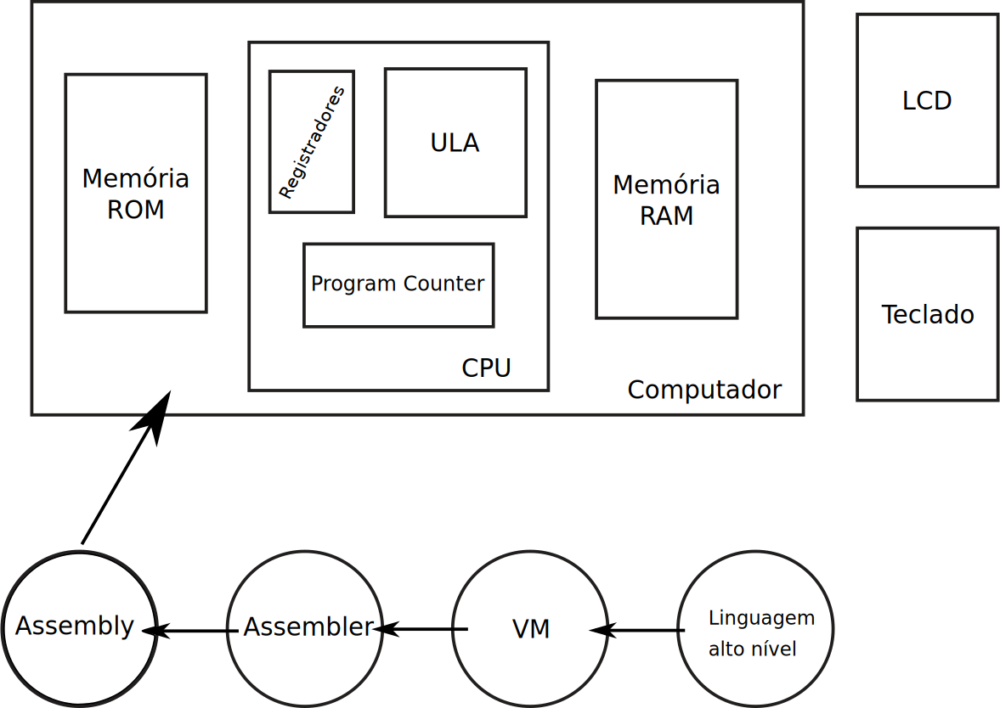

B - Lógica Combinacional¶
| Data da entrega |
|---|
| Quinta - 15/09 |

Scrum Master
Você é Scrum Master e não sabe por onde começar? De uma olhada nessas dicas: Vixi! Sou Scrum Master
Esse projeto tem como objetivo trabalhar com portas lógicas e sistemas digitais combinacionais (sem um clock) em FPGA e VHDL. Os elementos lógicos desenvolvidos nessa etapa serão utilizados como elementos básicos para a construção do computador.
Instruções¶
O desenvolvimento será na linguagem VHDL, o grupo deve se organizar para implementar todos os elementos propostos. O facilitador escolhido será responsável pela completude e consistência do branch master do grupo.
Integrantes¶
Tarefas devem ser criadas no Issues e atribuídas aos demais colegas. As tarefas devem ser resolvidas individualmente! Utilize a ajuda de seus colegas, mas resolva o que foi atribuído a vocês, essa é sua tarefa/ responsabilidade!
Warning
Este projeto é para ser realizado por todos os integrantes do grupo em seus próprios computadores, quem não participar, não implementar os módulos que foram atribuídos, ou não realizar pull-request não ganhará nota de participação individual.
Controle de Tarefas e Repositório¶
Nas discussões com os outros colegas o scrum master deve definir os módulos que cada um do grupo irá desenvolver. Crie uma rotina para commits e pull-request. Sempre teste os módulos e verifique se está fazendo o esperado.
Facilitador (Scrum Master)¶
- Fazer a atualização do fork com o upstream
- Organizar o github + issues + project
- Gerenciar o grupo (atribuir tarefas)
- Gerenciar os pull-requests
- Criar relatório da performance de cada um do grupo
- Entregar/Apresentar o projeto no final
Desenvolvedores¶
- Realizar as tarefas atribuidas pelo scrum-master
- Ajudar na entrega final
- Testar os códigos
- Realizar os pull-requests
Arquivos¶
A pasta contém dois diretórios distintos : src/ e Quartus/. O diretório src contém os arquivos fontes que deverão ser editados para implementar o projeto. O diretório quartus/ contém o projeto que possibilitará compilar os módulos e testar em hardware.
Entendendo o projeto¶
A pasta do projeto B no repositório Z01.1-proj possui a seguinte estrutura :
/B-LogicaCombinacional
testeLogicaCombinacional.py
/Quartus
/src
*.vhd
config_testes.txt
/testes
*.vhd
Quartus: Projeto Quartus que faz uso dos arquivos VHDL localizados emsrc/rtl/*.vhd- Serve para programar a FPGA
*.py: Scripts em python automatiza a execução dos testessrc/*.vhd: Arquivos VHDL que serão implementado pelo grupoconfig_testes.txt: Configuração dos testestestes/*.vhd: Arquivos VHDL que realizam teste lógico nos arquivos do rtl
Executando o script de teste¶
Abra o terminal na pasta B-LogicaCombinacional e execute o script python localizado nessa pasta:
$ ./testeLogicaCombinacional.py
Note
No exemplo de teste verificamos que aimplementação da nand está errada.
Entrega¶
A entrega deve ser feita no ramo main do git.
- Implementar todos os módulos listados
- Todos os módulos devem passar nos testes
- Actions deve estar configurado e funcionando
- Implementar acionamento do diplay de 7 segmentos e demonstrar na FPGA
Note
Esses arquivos estão localizados em B-LogicaCombinacional/src/
Tip
Utilize o VScode para editar os arquivos em vhdl e valide a implementação executando o script de testes.
Deve-se implementar os seguintes circuitos combinacionais:
Conceito C+¶
-
AND 16 bits
- Arquivo :
And16.vhd - Descrição : And bit a bit entre duas palavras de 16 bits.
- Arquivo :
-
OR de 16 bits
- Arquivo :
Or16.vhd - Descrição : OR bit a bit entre duas palavras de 16 bits.
- Arquivo :
-
NOT de 16 bits
- Arquivo :
Not16.vhd - Descrição : NOT bit a bit entre duas palavras de 16 bits.
- Arquivo :
-
NOR 8 Way
- Arquivo :
Nor8Way.vhd - Descrição : NOR entre 8 bits, resulta em uma única saída
- Arquivo :
-
OR 8 Way
- Arquivo :
Or8Way.vhd - Descrição : OR entre 8 bits, resulta em uma única saída
- Arquivo :
-
Demultiplexador de 2 saídas
- Arquivo :
DMux2Way.vhd - Descrição : Demultiplexa uma entrada binária em duas saídas.
- Arquivo :
-
Demultiplexador de 4 saídas
- Arquivo :
DMux4Way.vhd - Descrição : Demultiplexa uma entrada binária em quatro saídas.
- Arquivo :
-
Demultiplexador de 8 saídas
- Arquivo :
DMux8Way.vhd - Descrição : Demultiplexa uma entrada binária em oito saídas.
- Arquivo :
-
Multiplexador de duas entradas de 16 bits
- Arquivo :
Mux16.vhd - Descrição : Multiplexa duas entradas de 16 bits para uma de 16 bits.
- Arquivo :
-
Multiplexador 2 entradas de um bit cada
- Arquivo :
Mux2Way.vhd - Descrição : Multiplexa 2 entradas binárias em uma saída binária
- Arquivo :
-
Multiplexador 4 entradas de um bit cada
- Arquivo :
Mux4Way.vhd - Descrição : Multiplexa 4 entradas binárias em uma saída binária
- Arquivo :
-
Multiplexador 8 entradas de um bit cada
- Arquivo :
Mux8Way.vhd - Descrição : Multiplexa 8 entradas binárias em uma saída binária
- Arquivo :
-
Multiplexador 4 entradas de 16 bits cada
- Arquivo :
Mux4Way16.vhd - Descrição : Multiplexa 4 entradas de 16 bits cada em uma saída de 16 bits.
- Arquivo :
-
Multiplexador 8 entradas de 16 bits cada
- Arquivo :
Mux8Way16.vhd
- Arquivo :
-
Deslocador de bits
- Arquivo :
BarrelShifter16.vhd
- Arquivo :
Conceito B+¶
-
Circuito lógico
- Arquivo :
circuito.vhd - Descrição: Primeira questão da lista de exercícios Álgebra Booleana 2
- Arquivo :
-
Detector de moedas
- Arquivo :
detectorDeMoedas.vhd - Descrição: Questão do detector de moedas da lista de exercícios Álgebra Booleana 2
- Arquivo :
-
Impressora
- Arquivo :
impressora.vhd - Descrição: Questão da impressora da lista de exercícios Álgebra Booleana 2
- Arquivo :
-
Porta xor de 3 entradas
- Arquivo :
xor3.vhd - Descrição: Implemente uma porta XOR de 3 entradas utilizando necessariamente apenas um Mux8Way.
- Arquivo :
-
Display de 7s
- Arquivo: `sevenSeg.vhd'
- Descrição: Questão do display de sete segmentos da lista de exercícios Álgebra Booleana 2
Display 7s
- Esse item é uma continuação do que foi realizado no Lab4, onde vocês tiveram que exibir um valor constante no display de 7s.
- Para cada segmento do display, vocês devem encontrar uma equação booleana que o represente, e então implementar em VHDL e testar na FPGA.
Rubricas para avaliação do projeto¶
Cada integrante do grupo irá receber duas notas: Uma referente ao desenvolvimento total do projeto (Projeto) e outra referente a sua participação individual no grupo.
Grupo¶
Para atingir os objetivos A e B, deve-se antes atingir o C.
| Conceito | Descritivo |
|---|---|
| A+ | Exibe três dígitos em Hexadecimal na FPGA - anexar video ao repositório |
| (exibir até o valor 0x3FF = 2^10 - 1) | |
| B+ | Módulos adicionais implementados e funcionado (circuito, detector de moedas, impressora, xor) |
| Implementar um único display de 7s (conta de 0x0 0xF) - anexar video ao repositório | |
| C+ | Ter criado o project no github |
| Actions configurado e funcionando | |
| Todos os módulos básicos implementados e funcionado | |
| D | Até dois Módulos com falha/ não apresentou o vídeo da FPGA |
| I | Mais de três módulos com falha |
Conceito A
Vocês devem implementar o "exibe hexadecimal" no arquivo ConceitoA.vhd.
Tem um teste para os módulos, você pode testar incluindo o arquivo de configuração de testes.
Sugerimos que vocês reutilizem o módulo sevenSeg.vhd,
para isso devem utilizar uma recurso do VHDL chamado de port map.
Individual¶
As rubricas a serem seguidas serão comuns a todos os projeto e está descrito no link: